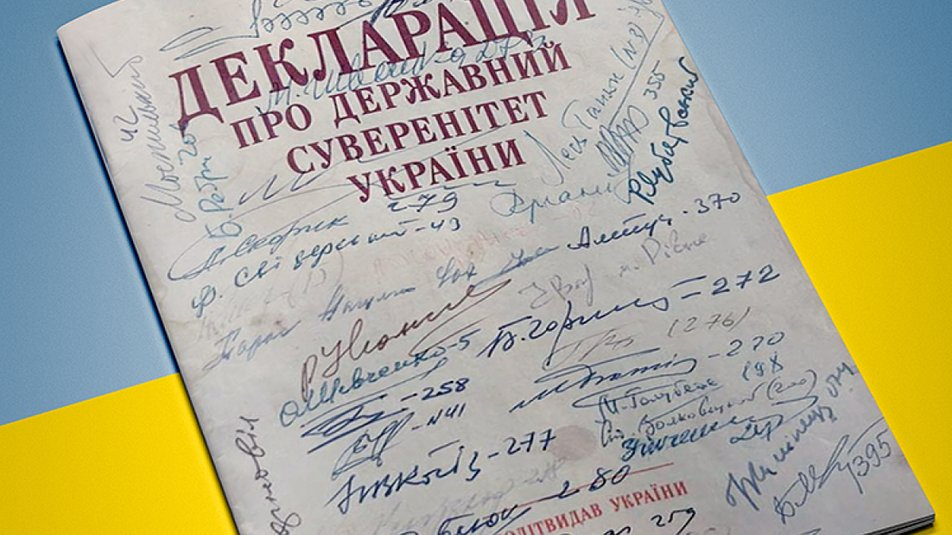
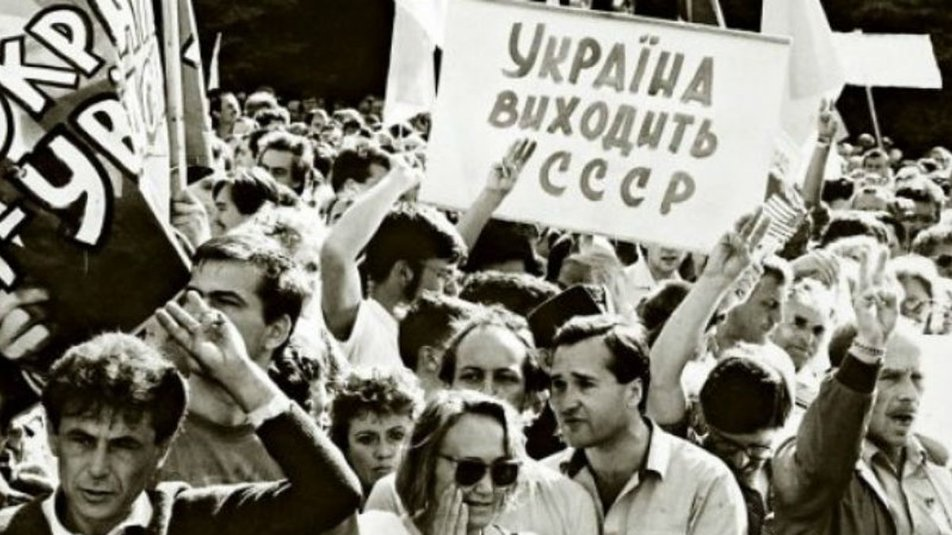
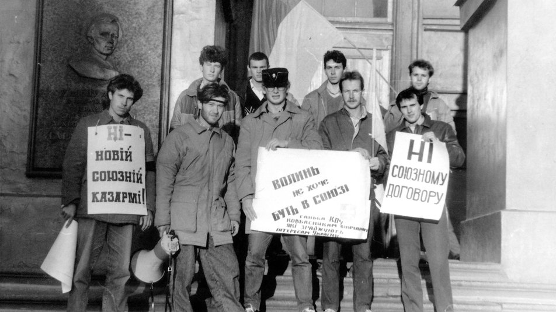

Шлях до незалежності: історія України
Незалежність України - це історичний процес, коли Україна здобула свою державність та незалежність від СРСР.
За століття під владою інших країн та систем, українці довго мріяли про свою вільну країну. У період гласності та перебудови у 1980-х роках, національно-визвольний рух набув популярності в Україні, що призвело до революції гідності в 1990-х. У 1991 році, після проведення всенародного референдуму, Україна оголосила про свою незалежність від СРСР. Це стало етапом в історії країни, що відкрило шлях для побудови власної держави та розвитку у всіх сферах життя.
Проте, на шляху до розвитку держави було багато викликів. У перші роки незалежності, країну охопила глибока економічна криза, що призвела до збільшення бідності та безробіття. Також виникли політичні проблеми, зокрема, корупція, нестабільність у владі та конфлікти між різними регіонами країни. Проте, Україна демонструє певні досягнення у своєму розвитку. Країна має свою конституцію та розвинуту систему демократії, а також підписала декілька важливих міжнародних договорів. Україна також є членом ООН, Ради Європи та інших міжнародних організацій.